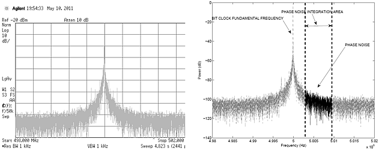
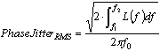
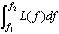
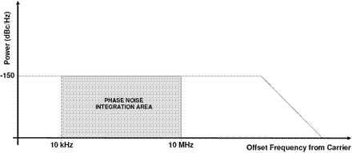
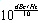
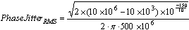
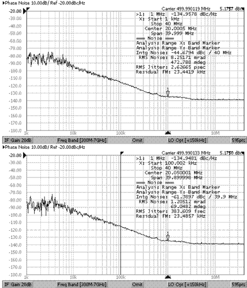
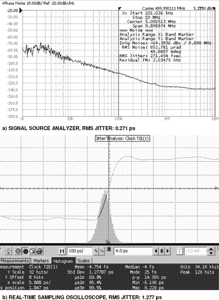
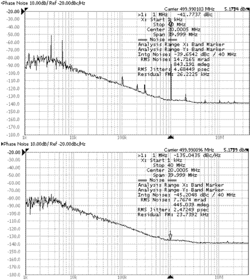

Challenges of Correlating Phase Noise with RMS and Random Jitter
Jose Moreira, Verigy Advantest Group
Paper-ID: 131806 February
Abstract
Test engineers are sometimes faced with the task of correlating phase noise measurements or specification with RMS jitter or random jitter measurements performed with an ATE channel or an oscilloscope. This type of correlation is not straightforward and can be a very challenging. This technical note tries to provide some technical background and insights on this challenge.
Key Words
Phase Noise, RMS Jitter, Random Jitter, Jitter Correlation
Phase Noise, RMS Jitter and Random Jitter
In some situations the jitter of a DUT, especially in the case of clock oscillators, PLLs or any other output in the form of a bit clock pattern is specified in terms of phase noise. It is important to understand the relationship between phase noise, RMS jitter and random jitter. Phase noise is measured in the frequency domain [1, 2]. Figure 1 (left) shows the output RF power spectrum around the fundamental frequency of a 1 Gbps bit clock signal (500 MHz fundamental frequency).

Figure 1: Frequency spectrum of a 1 Gbps bit clock signal (left) and the definition of phase noise (right).
Phase noise is computed by integrating a specified area on one sideband of the main carrier of the bit clock signal as shown in Figure 1 (right). The RMS phase jitter (phase noise expressed in seconds) can then be computed by the following equation:

Equation (1)Where f0 is the carrier frequency (500 MHz in the case of a 1 Gbps bit clock) and

is the noise integration area from frequency f1 to f2. It is important to take into account the units for the integration. The phase noise spectrum is usually represented in frequency (Hz) versus power (dBc/Hz) as show in the simple example of Figure 2. Note that in the graph, the zero frequency point corresponds to the carrier frequency and only one side of the spectrum around the carrier frequency is shown. This is the typical way phase noise plots are shown in specialized phase noise measurement instruments or software.
Figure 2: Simple phase noise example.
The RMS phase jitter in the example of Figure 2 can be easily computed as shown in Equation 2. The term

is necessary when using dBc/Hz units.
Equation (1)The critical point with phase noise is that as seen in equation 1 it will depend on the integrated area. The proper choice of this area depends on the application requirements. For example if the bit clock signal to be measured will be fed to a clock and data recovery (CDR) unit in its final application, that is able to track jitter to a certain frequency, it does not make sense to look to the phase noise below that frequency.
This critical dependence on the integrated phase noise area is demonstrated in Figure 3 where a 2.6 ps phase noise is measured with a 1 kHz to 40 MHz phase noise integration frequency range but this value drops to 384 fs is the frequency range is reduced to 100 kHz to 40 MHz.

Figure 3: Example of the phase noise value dependency on the integrated frequency range. Integrated from 1 kHz to 40MHz gives 2.6 ps RMS (top) and from 100 kHz to 40 MHz gives 0.384 ps RMS (bottom).
This also raises an issue when phase noise measurements have to be correlated to jitter measurements performed using other instruments like an oscilloscope as shown in the example of Figure 4.

Figure 4: Phase noise from a 1 Gbps bit clock measured with an Agilent Technologies signal source analyzer (a) and with an Agilent Technologies real-time sampling oscilloscope (b).
In the figure a jitter histogram is measured and the standard deviation of the jitter histogram is computed which corresponds to the jitter RMS value. In this example a large difference between the measured RMS jitter value on the real-time oscilloscope (1.28 ps) and the measured phase noise value from the signal source analyzer (0.271 ps) is observed. One of the reasons for this difference is that in the signal source analyzer the phase noise integration area starts at 100 kHz and goes to 10 MHz while on the real-time sampling oscilloscope there is no frequency range choice for the RMS jitter measurement. It will measure the entire frequency range. It might be possible to improve this correlation by using a software CDR with the appropriate frequency transfer characteristic on the real-time sampled waveform before computing the jitter histogram. Another option is the usage of a hardware CDR with the appropriate frequency transfer characteristic together with an equivalent time sampling oscilloscopes. But this can be a complex task depending on the jitter characteristics of the signal to be measured and the measurement instrumentation capabilities.
The previous example shows how critical it is to understand how a phase noise measurement was performed when trying to correlate to other time domain instruments for example, real-time sampling oscilloscope, equivalent-time sampling oscilloscope, time interval analyzer, bit error rate tester and ATE digital pin electronics) but one needs to understand that this correlation is even harder when other jitter components exist apart from the random jitter.
A phase noise measurement should only measure the random jitter component on the signal being measured. This means that all deterministic jitter components or spurs need to be removed from the signal before the phase noise measurement since it can have an impact on the measured value as shown in Figure 5. This sometimes requires that the phase noise measurement instrument contains the required software to remove the deterministic jitter components. In the example of Figure 5 the phase noise with the deterministic jitter components removed is 2.47 ps compared to 4.68 ps if the deterministic jitter components are not removed.

Figure 5: Phase noise spectrum with deterministic jitter components in the measured signal (top) and with deterministic jitter components removed (bottom).
This discussion also applies to the measurement instruments one is trying to correlate the phase noise measurement to. For example, the RMS jitter value obtained from a real-time oscilloscope jitter histogram only correlates with the phase noise value if the signal being measured has no deterministic jitter components. If the signal contains other jitter components apart from random jitter, then it is necessary to use a jitter separation algorithm to obtain the RJ value from the histogram. Note that this challenge is on top of the already discussed phase noise integration frequency region and how that translates to correlation challenges with other instruments.
References
[1] C. Rauscher, Fundamentals of Spectrum Analysis. Rhode & Schwarz, 2004.
[2] R. A. Witte, Spectrum and Network Measurements. Noble Publishing Corporation, 2001.